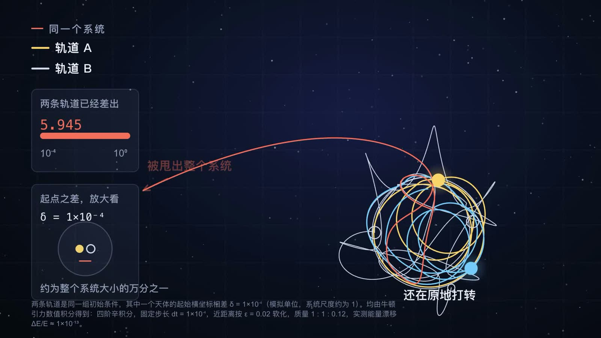
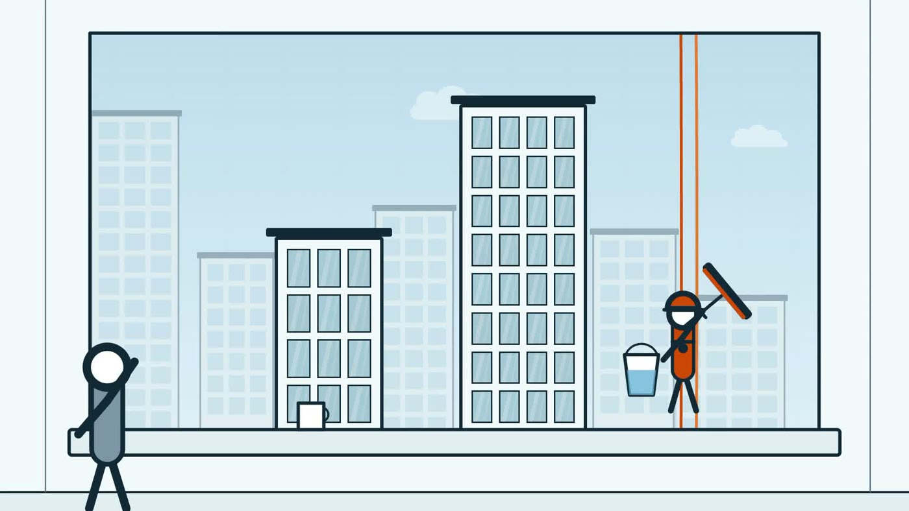
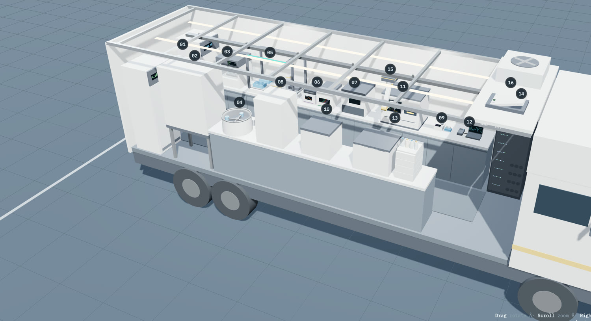

多半是讲解类的：把一件复杂的事拆开，画出来，讲到一个十岁小孩也能跟上。 Mostly the explaining kind: take something complicated apart, draw it, and get it clear enough that a ten-year-old could follow.
有时候做出来的是片子，有时候是工具，有时候是让工具自己去做片子。 Sometimes the thing is a film. Sometimes a tool. Sometimes a tool that makes the films itself.

二十多部讲解片。CRISPR 筛选、mRNA 癌症疫苗、大航海时代的旗帜到底是给谁看的。 每一部都带着分镜、来源，和我先做错了的地方。 Two dozen films that explain things. CRISPR screens, mRNA cancer vaccines, who the flag was actually for in the age of exploration. Each one comes with its storyboard, its sources, and the parts I got wrong first.
中文和英文都有 In Chinese and English
一个让编程 agent 做视频的工具。你说一句话，它规划、画动画、渲染， 然后回头看自己做出来的东西，再改。 A tool that lets a coding agent make video. You ask in a sentence; it plans, draws, renders, then looks at what it made and fixes it.
开源，装进 agent 只要一行 Open source, one line to install
一座装进 9.6 米房车的自动化分子实验室。剖开看，透视看，绕着看； 点任何一台仪器都有规格表，四条带旁白的流程把整套操作走完。 An automated molecular lab built into a 9.6-metre RV. Open it up, see through it, walk around it; click any instrument for its spec sheet, and four narrated workflows walk the whole procedure.
可交互的 3D，中英双语 Interactive 3D, in both languages